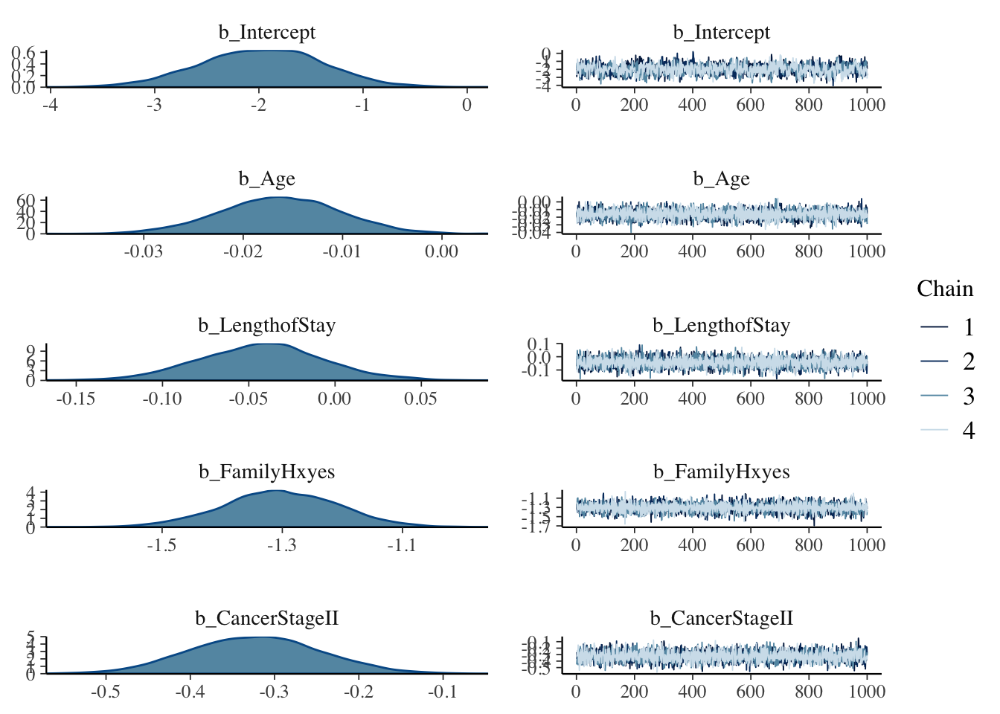
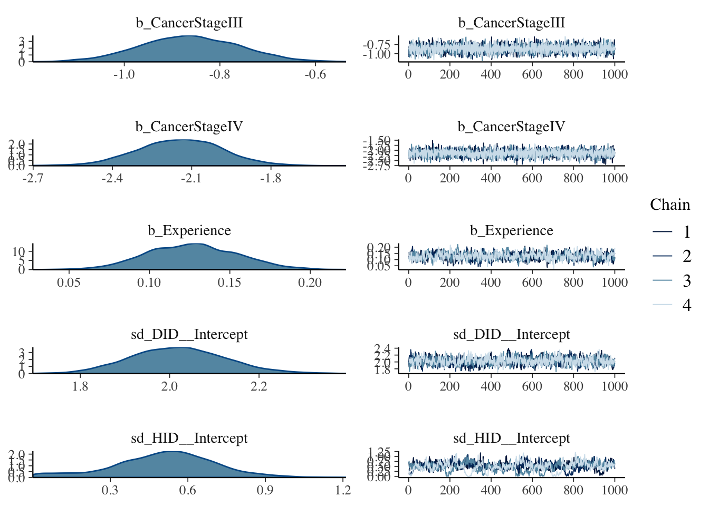
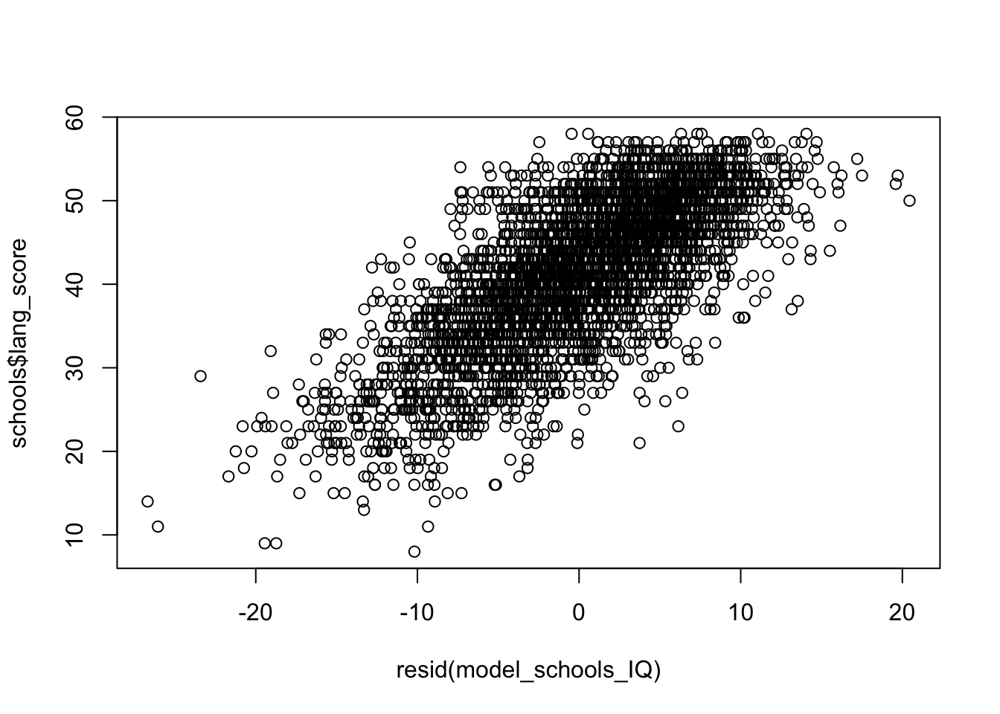
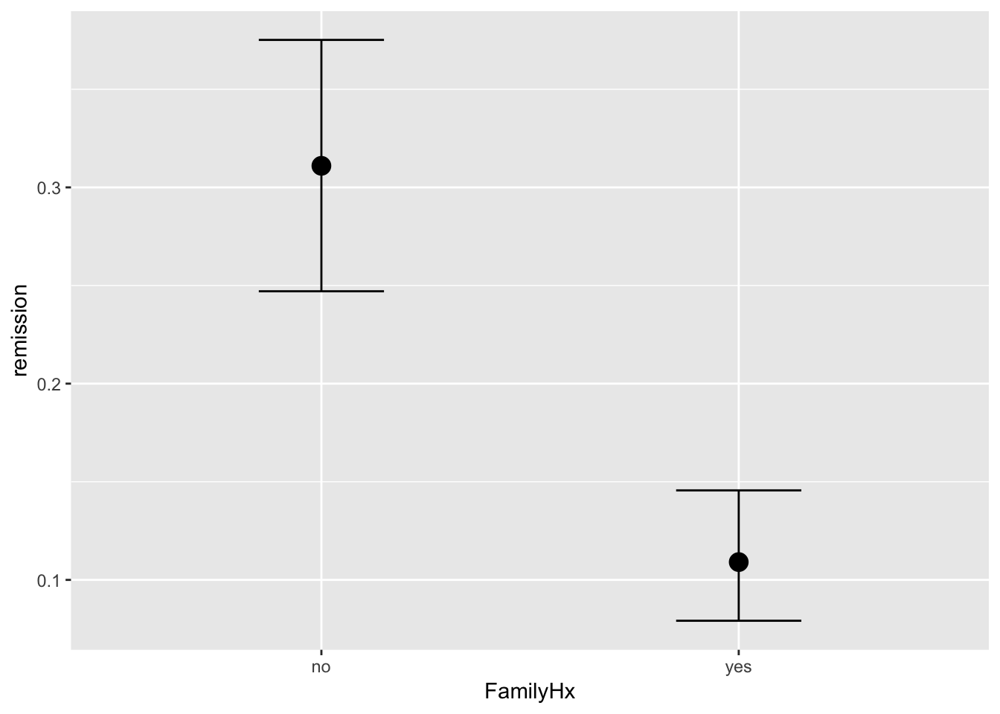
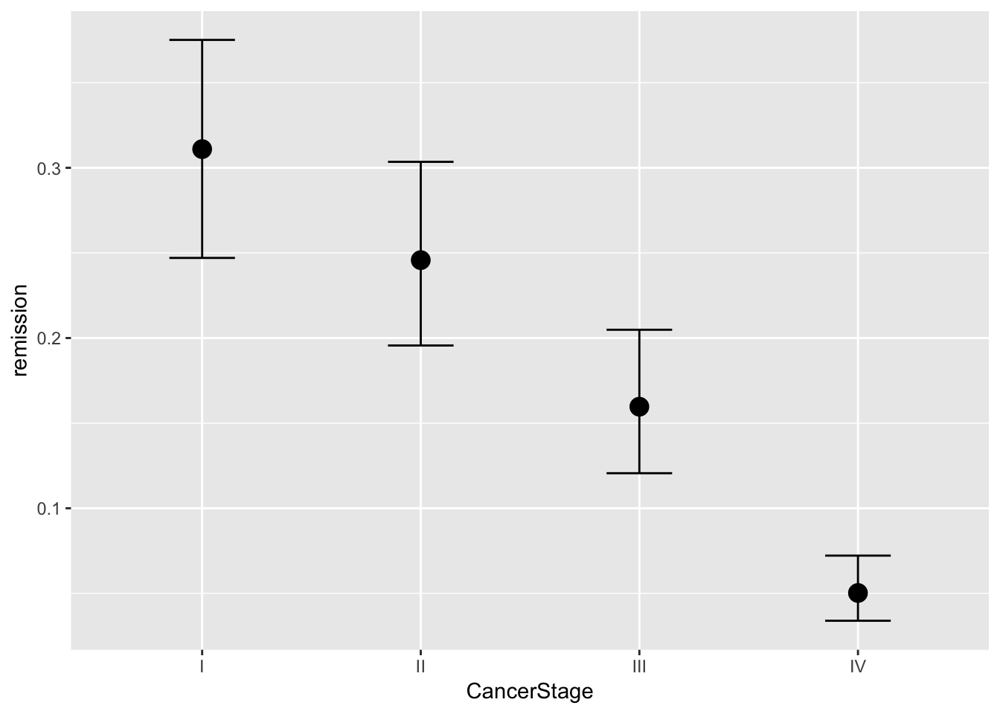
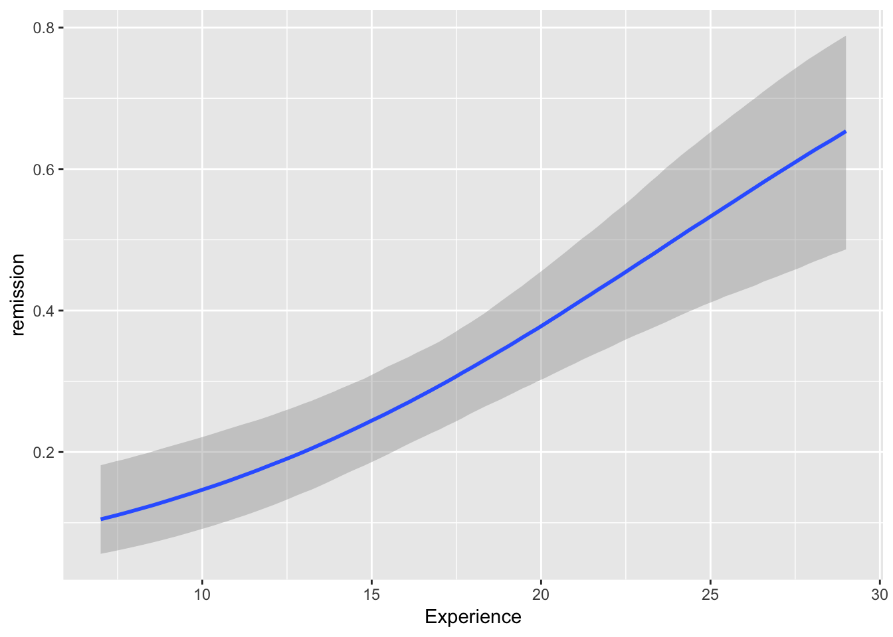
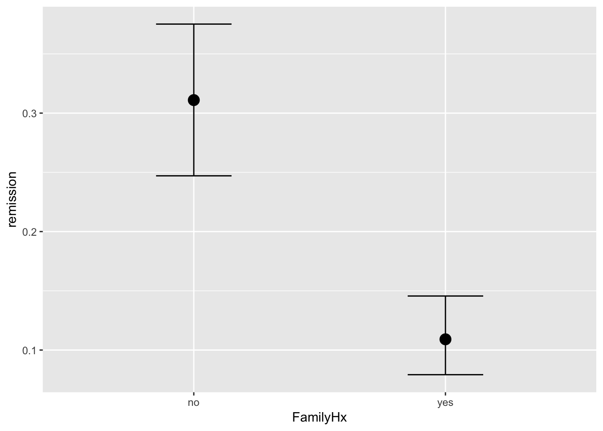
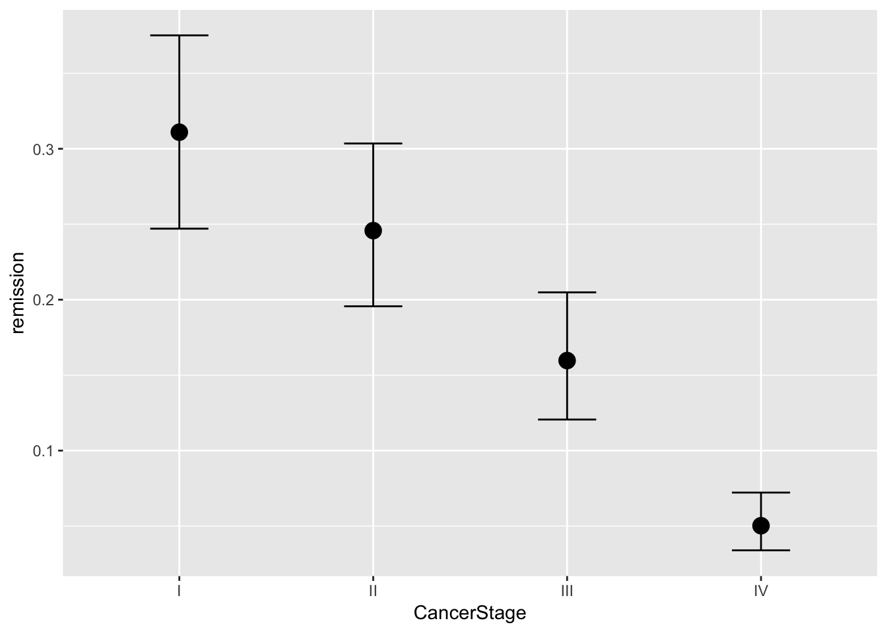
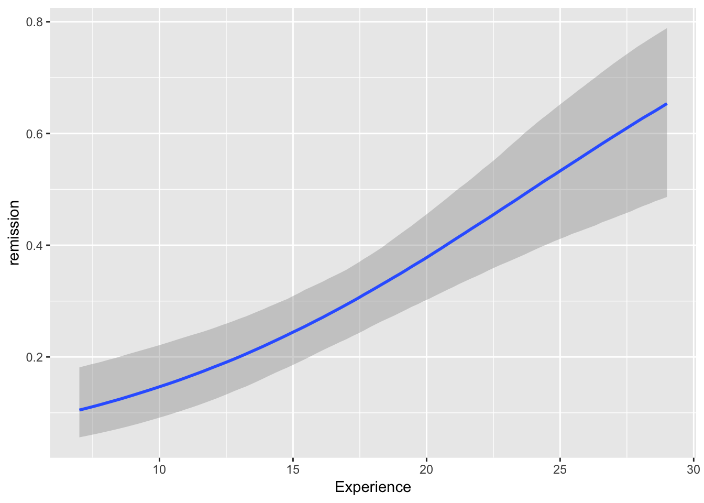

Chapter 5 Bayesian Mixed methods example
We will illustrate two examples here that you have already seen in Chapter 3. We will compare results we obtain from Bayesian alternative to lmer (bmer) and to glmer (brm). We may not have time to cover all, but please do have a look at your own time. We will provde an introduction to the main steps. You will see that estimation itself takes no time at all but you will need to explore your outputs a bit more, given the variety of the specifications you are presented with in Bayesian settings.
5.1 Data Description
#Lets load the data
lung_cancer <- read.csv("lung_cancer.csv")#Check out the structure
str(lung_cancer)## 'data.frame': 8525 obs. of 28 variables:
## $ X : int 1 2 3 4 5 6 7 8 9 10 ...
## $ tumorsize : num 68 64.7 51.6 86.4 53.4 ...
## $ co2 : num 1.53 1.68 1.53 1.45 1.57 ...
## $ pain : int 4 2 6 3 3 4 3 3 4 5 ...
## $ wound : int 4 3 3 3 4 5 4 3 4 4 ...
## $ mobility : int 2 2 2 2 2 2 2 3 3 3 ...
## $ ntumors : int 0 0 0 0 0 0 0 0 2 0 ...
## $ nmorphine : int 0 0 0 0 0 0 0 0 0 0 ...
## $ remission : int 0 0 0 0 0 0 0 0 0 0 ...
## $ lungcapacity: num 0.801 0.326 0.565 0.848 0.886 ...
## $ Age : num 65 53.9 53.3 41.4 46.8 ...
## $ Married : Factor w/ 2 levels "no","yes": 1 1 2 1 1 2 2 1 2 1 ...
## $ FamilyHx : Factor w/ 2 levels "no","yes": 1 1 1 1 1 1 1 1 2 1 ...
## $ SmokingHx : Factor w/ 3 levels "current","former",..: 2 2 3 2 3 3 1 2 2 3 ...
## $ Sex : Factor w/ 2 levels "female","male": 2 1 1 2 2 2 1 2 2 2 ...
## $ CancerStage : Factor w/ 4 levels "I","II","III",..: 2 2 2 1 2 1 2 2 2 2 ...
## $ LengthofStay: int 6 6 5 5 6 5 4 5 6 7 ...
## $ WBC : num 6088 6700 6043 7163 6443 ...
## $ RBC : num 4.87 4.68 5.01 5.27 4.98 ...
## $ BMI : num 24.1 29.4 29.5 21.6 29.8 ...
## $ IL6 : num 3.7 2.63 13.9 3.01 3.89 ...
## $ CRP : num 8.086 0.803 4.034 2.126 1.349 ...
## $ DID : int 1 1 1 1 1 1 1 1 1 1 ...
## $ Experience : int 25 25 25 25 25 25 25 25 25 25 ...
## $ School : Factor w/ 2 levels "average","top": 1 1 1 1 1 1 1 1 1 1 ...
## $ Lawsuits : int 3 3 3 3 3 3 3 3 3 3 ...
## $ HID : int 1 1 1 1 1 1 1 1 1 1 ...
## $ Medicaid : num 0.606 0.606 0.606 0.606 0.606 ...Fit the model using a mixture of variables that theoretically are important here:
library(lme4)
# Estimate the model and store results in model_lc
model_lc <- glmer(remission ~ Age + LengthofStay + FamilyHx + CancerStage + CancerStage + Experience + (1 | DID) + (1 | HID),
data = lung_cancer, family = binomial, optimizer='Nelder_Mead') #note that I have updated the optimizer (to avoid warnings)## Warning in checkConv(attr(opt, "derivs"), opt$par, ctrl =
## control$checkConv, : Model failed to converge with max|grad| = 0.858202
## (tol = 0.001, component 1)# Print the mod results:what do you find?
summary(model_lc)## Generalized linear mixed model fit by maximum likelihood (Laplace
## Approximation) [glmerMod]
## Family: binomial ( logit )
## Formula:
## remission ~ Age + LengthofStay + FamilyHx + CancerStage + CancerStage +
## Experience + (1 | DID) + (1 | HID)
## Data: lung_cancer
##
## AIC BIC logLik deviance df.resid
## 7225.6 7296.1 -3602.8 7205.6 8515
##
## Scaled residuals:
## Min 1Q Median 3Q Max
## -3.9563 -0.4229 -0.1890 0.3629 8.2299
##
## Random effects:
## Groups Name Variance Std.Dev.
## DID (Intercept) 3.8471 1.9614
## HID (Intercept) 0.2419 0.4919
## Number of obs: 8525, groups: DID, 407; HID, 35
##
## Fixed effects:
## Estimate Std. Error z value Pr(>|z|)
## (Intercept) -1.960353 0.568451 -3.449 0.000564 ***
## Age -0.015968 0.005904 -2.705 0.006836 **
## LengthofStay -0.043030 0.035505 -1.212 0.225524
## FamilyHxyes -1.295706 0.093369 -13.877 < 2e-16 ***
## CancerStageII -0.321924 0.076376 -4.215 2.50e-05 ***
## CancerStageIII -0.857475 0.100025 -8.573 < 2e-16 ***
## CancerStageIV -2.137657 0.162281 -13.173 < 2e-16 ***
## Experience 0.125360 0.026881 4.664 3.11e-06 ***
## ---
## Signif. codes: 0 '***' 0.001 '**' 0.01 '*' 0.05 '.' 0.1 ' ' 1
##
## Correlation of Fixed Effects:
## (Intr) Age LngthS FmlyHx CncSII CnSIII CncSIV
## Age -0.390
## LengthofSty -0.141 -0.319
## FamilyHxyes -0.013 0.103 -0.112
## CancerStgII 0.084 -0.181 -0.186 -0.052
## CancrStgIII 0.139 -0.222 -0.239 -0.051 0.513
## CancerStgIV 0.148 -0.220 -0.194 -0.012 0.357 0.347
## Experience -0.835 -0.009 -0.004 -0.022 -0.002 -0.005 -0.012
## convergence code: 0
## Model failed to converge with max|grad| = 0.858202 (tol = 0.001, component 1)Lets also build CIs while we are here - we can compare those later to Credible Intervals from brm.
library(lme4)
se <- sqrt(diag(vcov(model_lc))) #standard errors
# table of estimates with 95% CI using errors we obtained above
(CI_estimates <- cbind(Est = fixef(model_lc), LL = fixef(model_lc) - 1.96 * se, UL = fixef(model_lc) + 1.96 *
se))## Est LL UL
## (Intercept) -1.96035276 -3.07451662 -0.846188910
## Age -0.01596794 -0.02753911 -0.004396764
## LengthofStay -0.04303048 -0.11261951 0.026558540
## FamilyHxyes -1.29570603 -1.47870949 -1.112702564
## CancerStageII -0.32192409 -0.47162068 -0.172227491
## CancerStageIII -0.85747504 -1.05352351 -0.661426574
## CancerStageIV -2.13765689 -2.45572684 -1.819586939
## Experience 0.12536019 0.07267364 0.178046738We have seen these ones before. Lets us now see what happens if were to move into Bayesian setting:
library(brms)## Loading required package: Rcpp## Loading 'brms' package (version 2.8.0). Useful instructions
## can be found by typing help('brms'). A more detailed introduction
## to the package is available through vignette('brms_overview').##
## Attaching package: 'brms'## The following object is masked from 'package:psych':
##
## cs## The following object is masked from 'package:MuMIn':
##
## loo## The following object is masked from 'package:lme4':
##
## ngrpsmod = brms::brm(remission ~ Age + LengthofStay + FamilyHx + CancerStage + CancerStage + Experience + (1 | DID)
+ (1 | HID),
data = lung_cancer,
family = 'bernoulli',
prior = set_prior('normal(0, 3)'), iter = 2000,
chains = 4,
cores = 4
)## Compiling the C++ model## Start samplingsummary(mod)## Family: bernoulli
## Links: mu = logit
## Formula: remission ~ Age + LengthofStay + FamilyHx + CancerStage + CancerStage + Experience + (1 | DID) + (1 | HID)
## Data: lung_cancer (Number of observations: 8525)
## Samples: 4 chains, each with iter = 2000; warmup = 1000; thin = 1;
## total post-warmup samples = 4000
##
## Group-Level Effects:
## ~DID (Number of levels: 407)
## Estimate Est.Error l-95% CI u-95% CI Eff.Sample Rhat
## sd(Intercept) 2.02 0.11 1.82 2.24 895 1.00
##
## ~HID (Number of levels: 35)
## Estimate Est.Error l-95% CI u-95% CI Eff.Sample Rhat
## sd(Intercept) 0.51 0.20 0.06 0.89 115 1.02
##
## Population-Level Effects:
## Estimate Est.Error l-95% CI u-95% CI Eff.Sample Rhat
## Intercept -1.97 0.59 -3.15 -0.85 896 1.01
## Age -0.02 0.01 -0.03 -0.00 5745 1.00
## LengthofStay -0.04 0.04 -0.11 0.03 5114 1.00
## FamilyHxyes -1.30 0.10 -1.49 -1.12 5575 1.00
## CancerStageII -0.32 0.08 -0.47 -0.17 4420 1.00
## CancerStageIII -0.86 0.10 -1.06 -0.66 3722 1.00
## CancerStageIV -2.14 0.16 -2.46 -1.84 4305 1.00
## Experience 0.13 0.03 0.07 0.18 659 1.00
##
## Samples were drawn using sampling(NUTS). For each parameter, Eff.Sample
## is a crude measure of effective sample size, and Rhat is the potential
## scale reduction factor on split chains (at convergence, Rhat = 1).#Various plots are available :plot either all
plot(mod, ask = FALSE)
If you compare the resulting plots to those that we found last time using glmer() you ll be surprised to find out how some CIs have changed once we are in a Bayesian setting.
#Can also check ME
brms::marginal_effects(mod, ask = FALSE) 

You will note that at overall, the results are quite similar when it comes to coefficients. However, we may find that our uncertainty is estimated with more information in mind here. If you have faith in Bayesian thinking, then consequently you will have more faith in the above results or vice versa :)